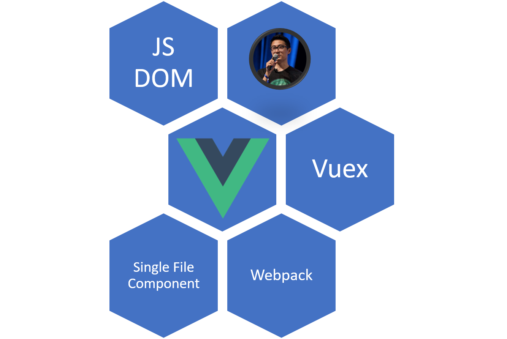

## Vue JS ? - Librairie JS pour créer des composants - Multi-modulaire (vue-router, vuex, vue-loader, vueify, …) - Basé sur le Virtual DOM

## Comment je démarre ? Un simple constructeur ```html <div id="app"></div> ``` ```javascript const app = new Vue({ el: '#app' }) ```
Et voilà...
Composants ?
Single File Component
## Atelier ? - Librairie JS pour créer des composants - Multi-modulaire (vue-router, vuex, vue-loader, vueify, …) - Basé sur le Virtual DOM